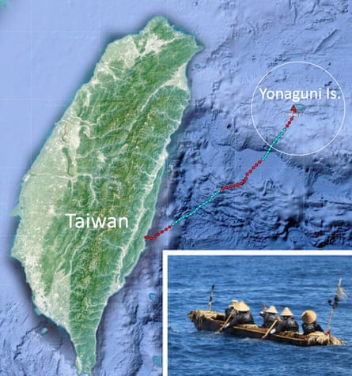
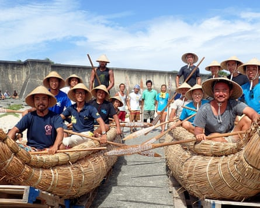

D r Yousuke Kaifu was working at an archaeological site on the Japanese islands of Okinawa when a question started to bubble in his mind. The pieces unearthed in the excavation, laid out before him, revealed evidence of humans living there 30,000 years ago, arriving from the north and the south. But how did they get there?
“There are stone tools and archaeological remains at the site but they don’t answer those questions,” Kaifu, an evolutionary anthropologist at the University of Tokyo, says.
In the Paleolithic era, or the old stone age, technology was rudimentary, he says. “I thought it was great they reached those islands with such simple technology. I wanted to experience it.”
So Kaifu devised an adventurous plan that would see a team of researchers take to the sea in a 225km canoe trip from Taiwan to Japan’s Yonaguni island.
Yonaguni is the closest of the Ryukyu islands – a chain stretching south-west from Kyushu to Taiwan – but it lies across one of the world’s strongest currents. The voyage was reminiscent of the famed 1947 Kontiki crossing by Norwegian Thor Heyerdahl, which proved it was possible that peoples from South Americas paddled to Polynesia.
But first, Kaifu’s team needed a boat. Any vessel used by the original Paleolithic travellers had long since disintegrated. The team used traditional techniques to build rafts made of bamboo and reed, but ocean tests found they were too slow to battle the Kuroshio current, which was even stronger at the time of the Paleolithic crossing.
“Through those failed experiments we gradually learned the difficulty of the crossing, but at the same time we knew the Palaeolithic people were on the island. They had succeeded, so there must be a resolution which we just hadn’t found,” Kaifu says.
The canoe’s route by day (in red) and night (in blue).Composite: Google Earth / Yousuke Kaifu/The University of Tokyo
Eventually, the team built a heavy, unstable but workable dugout canoe out of Japanese cedar, and identified Wushibi bay on Taiwan’s east coast from which to launch the “Sugime”.
Crucially, Yonaguni is not visible from Taiwan’s shore but can be seen on a clear day from its mountains, near Taroko. The researchers believed it likely that the early migrants had seen it, and that they were well aware of the strength and behaviour of the Kuroshio current from fishing ventures.
The team of five included professional paddlers as well as the scientists, but no one who had made such a journey, let alone without modern navigation. The day they set out, the weather was not good, Kaifu recalls, with choppy seas and clouds obscuring the stars they needed to find their way. Instead, they had to rely on another ancient technique, monitoring the direction of the swell to keep their own direction stable. “Polynesian and Micronesian people did it, and we learned the technique,” says Kaifu, who travelled on the crew’s escort vessel, “the safe place”, he laughs.
For 45 hours they paddled, suffering muscle aches, fatigue, cramps and even hallucinations. “Surrounded only by the sea, clouds, and sky, they were uncertain about their position,” the report’s journey log notes.
But their arrival on the second night was anti-climactically untraditional.
Still almost 40km away, “they found the island by the lighthouse, which was unfortunate”, Kaifu said.
“But the beautiful moment for me was the time of [the previous day’s] dawn, the sun was coming up and the sky became gradually light, and we saw the clouds on the horizon. But at one point on the horizon the clouds were different, so there must be something under the clouds. That was the moment we were sure the island was there. Just like the ancient people, the ancestors, it was good to capture the island from the natural signature.”
The team made the journey in 2019, with support from Japan’s National Museum of Science and Nature, Taiwan’s National Museum of Prehistory, and crowdfunding donors. Last week they published two papers and a 90-minute documentary on their findings, on the journey itself and on the ocean modelling of the route’s treacherous currents and unpredictable weather.
Paddlers sit in reed-bundle rafts. The team experimented with different materials before settling on Japanese cedar.Photograph: Danee Hazama/The University of Tokyo
“Paleolithic people are often regarded as ‘inferior’ among the general public, primarily due to their ‘primitive’ culture and technology,” the report said. “In sharp contrast, our experiment highlighted that they accomplished something extraordinary with the rudimentary technology available to them at the time.”
There is much unknown about the early migration of humans. Homo sapiens are believed to have spread across the world with large-scale maritime expansion occurring at least 50,000 years ago. A 2017 study in northern Australia found it could have been 15,000 to 30,000 years earlier than that.
The team’s report noted growing consensus in the scientific community that the maritime migrations were driven by intentional seafaring more than accidental drifting, but without really knowing much about how. Kaifu’s team found that while the journey from Taiwan to an unseen island was treacherous and required skill, strength and a lot of luck, it was possible.
Almost six years to the day since his team paddled away from Wushibi, Kaifu is excited recalling the details of their “imperfect” journey.
“We anthropologist and archeologists who have studied human migration in the past, we draw a line on a map,” Kaifu said. “But behind each of those lines there must be a great story. Crossing the ocean can’t be represented by a simple line. I wanted to know the real story behind those migrations.”